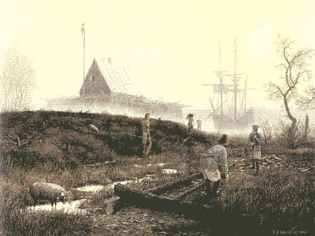
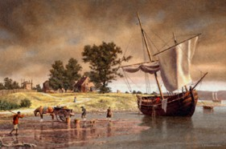
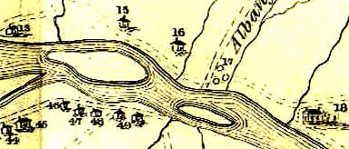

|
Variously called Castle Island, Martin Gerritse's Island, Patroon's Island, and Westerlo Island, the large landform on the west side of the Hudson River was separated from the mainland by the passage of the Normanskill (sometimes called the "Normanskill Creek") behind it as it wound its way into the Hudson. The island has a rich history and many traditions! Inhabited by both Mohawk and Mohicans, it was said to be the site of a French trading post built during the sixteenth century. The first documented inhabitation probably occurred in 1614 when a trading outpost known as Fort Nassau was erected by the Dutch West India Company. Located on the Hudson River flood plain, the rudimentary "fort" was washed away by flooding in 1617. Fort Nassau was replaced by the building of Fort Orange in 1624. By the 1640s, the fertile island was divided into farms and leased to tenants. The first farm on Castle Island was called "Rensselaersburgh" and was established in 1630. Early tenants included Brant Peelen, Adrian Vanderdonck, Cornelis Segerse, and Marte Gerritse Van Bergen. Marte Gerritse held a lease on the island from before 1664 until about 1690. During that time, it was among the most productive farms in Rensselaerswyck. Gerritse tried to purchase the island but was rebuffed by the Van Rensselaers and finally was displaced and replaced by members of the Staats family. The Albany city charter of 1686 fixed Albany's southeastern boundary as the "tip of Marte Gerritse's island." Throughout the balance of the colonial period, the island was included in the manor of Rensselaerswyck and was leased to a succession of advantaged area residents. In 1744, John Milne, former rector of St. Peters Anglican church, was its resident farmer.  Then, British retainer Hitchen Holland held the lease until his death in 1762. In 1767, it was called "Patroon's Island" and was leased to John Bradstreet. On patroon Stephen Van Rensselaer's death in 1769, the island passed to his widow, Catherine Livingston Van Rensselaer. Perhaps it was known as "Westerlo Island" because the patroon's widow married Dominie Eilardus Westerlo in 1775. By the 1880s, the island had about 160 acres of "fertile land . . producing fine crops in favorable seasons." It also had two ironworks on its northern end. At that time, it belonged to the town of Bethlehem. From 1909 to 1927/8, the island was used as an airfield called "Quenton Roosevelt Field." Famed aviators Glenn Curtis and Charles A. Lindbergh landed on the airstrip - the predecessor of the Albany Airport. New York State created the Albany Port District in 1931 which encompassed 200 acres (including the island) within the city of Albany and another 35 acres across the river in Rensselaer. Dredging and construction followed. In 1932, the island had been transformed and officially opened as the Port of Albany. The best work on the Mohicans has been produced by historian Shirley Dunn. Painting entitled "The Trading House - 1615," by Len Tantillo is the only representation of Fort Nassau. The painting is described and reproduced in Visions of New York State, 40-43. Painting entitled "Castle Island, 1645," by Len Tantillo is his second visualization of settler life on the island. The painting depicts one of the two farms on the island during the 1640s. Detail showing Castle Island. Enlarged from a seventeenth-century map in the Library of Congress. The map detail and discussion are from Visions of New York State, 46, 40-44. See "Westerlo Island: the First Settlement," in Bethlehem Revisited: A Bicentennial Story, 1793-1993, edited by Floyd Brewer (Bethlehem, 1993), 34-37, 41-43, 45, 57-58, 83. Cornelis Segerse took up the farm formerly occupied by Brant Peelen, deceased, which was one of the two farms on Castle Island, near Albany. In 1646, he took over from Adrian Vanderdonck the other farm for the remaining 3 years of its lease, and thus came into possession of the entire island. In 1651, an inventory of the farm of Cornelis Segers showed that he was the owner of 13 horses and 22 cows, and that the farm contained 70 morgens, and the rent was 1210 guilders. This farm was called Welysburgh. In 1744, the island was visited and described by Marylander Dr. Alexander Hamilton. Detail showing Castle/Patroon's Island from an engraved print of the "Map of the Manor Renselaerswick" surveyed by John R. Bleecker in 1767. Print in the Graphics Archive of the Colonial Albany Project. The only statement in print on the Port of Albany is in Mc Eneny, Albany: Capital City on the Hudson, 172. first posted 11/30/01; last revised 9/12/14 |